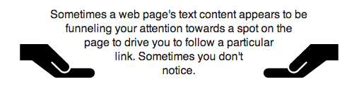
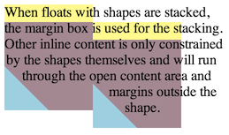
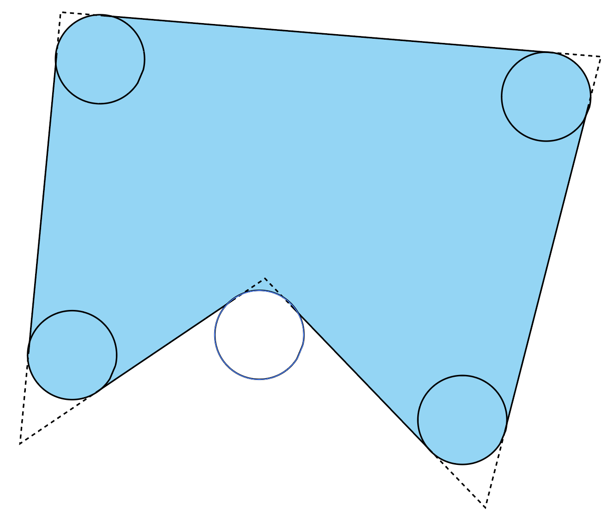
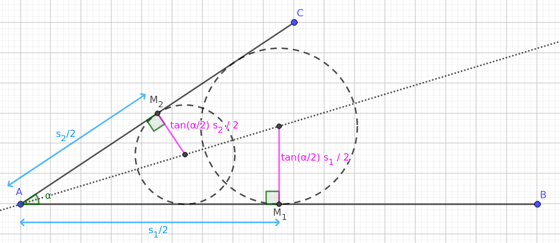
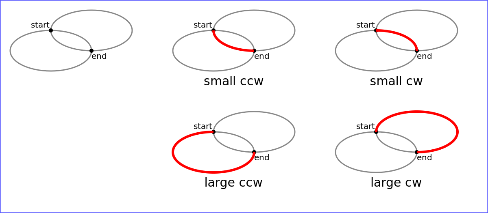
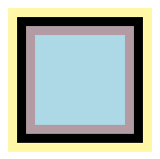
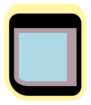
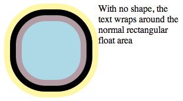

CSS Shapes describe geometric shapes for use in CSS. For Level 1, CSS Shapes can be applied to floats. A circle shape on a float will cause inline content to wrap around the circle shape instead of the float’s bounding box.
CSS is a language for describing the rendering of structured documents
(such as HTML and XML)
on screen, on paper, etc.
Status of this document
This is a public copy of the editors’ draft.
It is provided for discussion only and may change at any moment.
Its publication here does not imply endorsement of its contents by W3C.
Don’t cite this document other than as work in progress.
Please send feedback
by filing issues in GitHub (preferred),
including the spec code “css-shapes” in the title, like this:
“[css-shapes] …summary of comment…”.
All issues and comments are archived.
Alternately, feedback can be sent to the (archived) public mailing list
www-style@w3.org.
Shapes define arbitrary geometries
that can be used as CSS values.
This specification defines properties
to control the geometry
of an element’s float area.
The shape-outside property uses shape values
to define the float area for a float.
Note: Future levels of CSS Shapes will allow use of shapes
on elements other than floats.
Other CSS modules can make use of shapes as well,
such as CSS Masking [CSS-MASKING]
and CSS Exclusions [CSS3-EXCLUSIONS].
Note: If a user agent implements both CSS Shapes
and CSS Exclusions,
the shape-outside property defines
the exclusion area for an exclusion.
Note: A future level of CSS Shapes will define a shape-inside property,
which will define a shape to wrap content within the element.
1.1.
Module Interactions
This module extends the float features defined in [CSS2] chapter 9.
1.2. Values
This specification follows the CSS property definition conventions from [CSS2]
using the value definition syntax from [CSS-VALUES-3].
Value types not defined in this specification are defined in CSS Values & Units [CSS-VALUES-3].
Combination with other CSS modules may expand the definitions of these value types.
In addition to the property-specific values listed in their definitions,
all properties defined in this specification
also accept the CSS-wide keywords as their property value.
For readability they have not been repeated explicitly.
1.3.
Terminology
Wrap
This specification uses the term wrap
to refer to flowing content
around the sides of a float area,
defined in [CSS2] chapter 9.
Content wraps around the right side
of a left-floated box,
and content wraps around the left side
of a right-floated box.
One result of this wrapping
is that line boxes next to a float
are shortened as necessary
to avoid intersections with the float area.
Float area
The area used
for wrapping content
around a float element.
The rules for float behavior
use the sides of the float area
to determine where content flows.
By default,
the float area is the float element’s
margin box
(note this can be different than
the float area produced
by the margin-box value,
which includes border-radius curvature).
This specification’s shape-outside
and shape-margin properties
can be used to define an arbitrary,
non-rectangular float area.
direction-agnostic size
The direction-agnostic size of a box is equal to the length of the diagonal of the box,
divided by sqrt(2).
Note: This is a method of averaging the width and height of a box
used by SVG in some cases,
when a percentage of a box’s size is desired
but the context doesn’t specifically favor the width or the height.
For square boxes, this is the same as the width/height.
2.
Relation to the box model and float behavior
While the boundaries used
for wrapping inline flow content
outside a float
can be defined using shapes,
the actual box model does not change.
If the element has specified
margins, borders or padding
they will be computed and rendered
according to the [CSS3BOX] module.
Also, float positioning and stacking are not affected
by defining a float area with a shape.
When a shape is used to define
a float area,
the shape is clipped
to the float’s margin box.
In other words,
a shape can only ever reduce
a float area,
not increase it.
A reduced float area may have no effect
on some line boxes
that would normally be affected by the float.
If a shape does not enclose any area,
the shape’s edges are still used
to define the float area.
A float area defined by a shape
may reduce the normal float area on all sides,
but this does not allow content to wrap
on both sides of a float.
Left floats with a shape-outside still
only allow content wrapping on the right side,
and right floats only allow wrapping on the left.
In the following example
the left and right floating
img elements
specify a triangular shape
using the shape-outside property.
<img class="left" src="hand.svg"/>
<img class="right" src="hand.svg"/>
<p>
Sometimes a web page’s text content appears to be
funneling your attention towards a spot on the page
to drive you to follow a particular link. Sometimes
you don’t notice.
</p>
<style type="text/css">
.left {
shape-outside: polygon(0 0, 100% 100%, 0 100%);
float: left;
width: 40%;
height: 12ex;
transform: scaleX(-1);
}
.right {
shape-outside: polygon(100% 0, 100% 100%, 0 100%);
float: right;
width: 40%;
height: 12ex;
}
p {
text-align: center;
}
</style>

Since shapes are clipped to the float’s margin box,
adding this shape to the left float above
would result in the same rendering.
shape-outside: polygon(0 0, 500% 500%, 0 500%);
A shape that does not enclose any area
still has edges that contribute to the float area.
This inset shape is a vertical line positioned
at the midpoint of the reference box.
This midpoint edge is used as the edge
of the float area for wrapping content.
shape-outside: inset(0% 50% 0% 50%);
If inset values add up to more than the width,
CSS Backgrounds 3 § 4.5 Overlapping Curves rules are used to determine
the edges of the rectangle.
This shape results in a vertical edge
25% from the left side of the reference box.
shape-outside: inset(0% 150% 50% 0%);
If the shape is only a horizontal line,
then it is an empty float area and has no effect on wrapping.
Note that in this example shape-margin must be 0px
(otherwise the line would expand to enclose an area).
A shape-outside can create open areas
on both the left and right
of a float area.
Content still wraps only on one side
of a float in this case.
In the picture,
the shape is rendered in blue,
and the content area outside the shape in mauve.
The following styling creates
a shape much smaller than
the float’s content area,
and adds a margin-top to the float.
In the picture,
the shape is rendered in blue,
the content area outside the shape in mauve,
and the margin area of the float box in yellow.
The inline content only wraps around the shape,
and otherwise overlays the rest
of the float margin box.
The next picture shows a possible result
if two of these floats
were stacked next to each other.
Note that the floats are positioned
using their margin boxes,
not the float area.

3.
Basic Shapes
The <basic-shape> type
can be specified using basic shape functions.
When using this syntax
to define shapes,
the reference box is defined
by each property that uses
<basic-shape> values.
The coordinate system for the shape
has its origin on the top-left corner of the
reference box with the x-axis
running to the right
and the y-axis running downwards.
All the lengths expressed in percentages
are resolved from the used dimensions
of the reference box.
Defines an inset rectangle
via insets from each edge of the reference box.
If less than four <length-percentage> values are provided,
the omitted values default in the same way as the margin shorthand:
an omitted second or third value defaults to the first,
and an omitted fourth value defaults to the second.
The four <length-percentage>s
define the position of the top, right, bottom, and left edges of a rectangle,
respectively,
as insets from the corresponding edges of the reference box.
A pair of insets in either dimension
that add up to more than the used dimension
(such as left and right insets of 75% apiece)
use the CSS Backgrounds 3 § 4.5 Overlapping Curves rules
to proportionally reduce the inset effect to 100%.
For example, specifying inset(75% 0 50% 0)
has the top+bottom edges summing to 125%
of the reference box’s height.
They’re proportionally reduced to sum to 100%,
identical to specifying inset(60% 0 40% 0).
The optional <'border-radius'> argument(s)
define rounded corners for the rectangle
using the border-radius shorthand syntax.
Defines a rectangle
via offsets from the top and left edge of the reference box,
and a specified width and height.
The four <length-percentage>s define,
respectively,
the inset from the left edge of the reference box,
the inset from the top edge of the reference box,
the width of the rectangle,
and the height of the rectangle.
Note: This syntax is inspired by the viewBox attribute from SVG.
The optional <'border-radius'> argument(s)
define rounded corners for the inset rectangle
using the border-radius shorthand syntax.
Defines a rectangle
via insets from the top and left edges of the reference box.
The four <length-percentage>s
define the position of the top, right, bottom, and left edges of a rectangle,
respectively,
as insets from the top edge of the reference box
(for the first and third values)
or the left edge of the reference box
(for the second and fourth values).
An auto value makes the edge of the box
coincide with the corresponding edge of the reference box:
it’s equivalent to 0%
as the first (top) or fourth (left) value,
and equivalent to 100%
as the second (right) or third (bottom) value.
The second (right) and third (bottom) values are floored
by the fourth (left) and second (top) values, respectively.
For example, specifying rect(10px 0 0 20px)
would place the bottom edge higher than the top edge,
and the right edge further left than the left edge,
so both are corrected to not cross over the other edge,
identical to specifying rect(10px 20px 10px 20px).
Note: This syntax is similar,
but not quite identical,
to the legacy rect() function
used solely by the clip property.
The optional <'border-radius'> argument(s)
define rounded corners for the rectangle
using the border-radius shorthand syntax.)
The <radial-size> argument defines
the circle’s radius.
Rather than referring to the gradient box,
values are resolved against the reference box.
Two <length-percentage> values are invalid.
If omitted it defaults to closest-side.
The <position> argument defines
the center of the circle.
Unless otherwise specified,
this defaults to center if omitted.
The <radial-size> argument defines
the horizontal and vertical radiuses of the ellipse.
Rather than referring to the gradient box,
values are resolved against the reference box.
If omitted it defaults to closest-side.
The <position> argument defines
the center of the ellipse.
Unless otherwise specified,
this defaults to center if omitted.
The <'fill-rule'> specifies the filling rule used
to determine the interior.
Defaults to nonzero if omitted.
An optional <length> after a round keyword
defines rounding for each vertex of the polygon.
The length is the radius of a circle
whose center lies on the bisector
of the smaller angle of the vertex,
and that is tangential
to both sides of the vertex.

Rounding polygon vertices that are both convex and concave.
To avoid rounding more
than half of any line segment,
the rounding of each vertex
must be clamped separately
such that the radius is never more than
the smaller of tan(angle/2) segment / 2
evaluated against both vertex line segments.

This diagram shows the intent of the clamping formula.
Each <length-percentage> pair
specifies a vertex of the polygon,
as a horizontal and vertical offset
from the left and top edges of the reference box.
The UA must close a polygon
by connecting the last vertex
with the first vertex of the list.
The <'fill-rule'> specifies the filling rule used
to determine the interior.
Defaults to nonzero if omitted,
unless the function is being used
in a context such as SVG shapes
where the fill-rule property is relevant.
In that case an omitted value will use
the computed value of the fill-rule property.
The <string> represents an
SVG Path data string.
A path data string that does not conform to the
to the grammar and parsing rules of SVG 1.1,
or that does conform but defines an empty path,
is invalid and causes the entire path() to be invalid.
The initial position is defined
by the first “move to” argument
in the path string.
For the initial direction follow SVG 1.1.
The UA must close a path
with an implicit
closepath command ("z" or "Z")
if it is not present in the string
for properties that require a closed loop
(such as shape-outside and clip-path).
While the path() function allows reuse of the SVG path syntax
to define more arbitrary shapes than allowed by more specialized shape functions,
it requires writing a path as a single string
(which is not compatible with, for example, building a path piecemeal with var()),
and inherits a number of limitations from SVG,
such as implicitly only allowing the px unit.
The shape() function uses a set of commands roughly equivalent to the ones used by path(),
but does so with more standard CSS syntax,
and allows the full range of CSS functionality,
such as additional units and math functions.
The commands used by shape() are dynamically turned into path segments when it is used for rendering,
e.g., when computing the rendered clip-path.
In that sense, shape() is a superset of path(). A path() can be easily converted to a shape(),
but to convert a shape() back to a path() or to SVG requires information about the CSS environment (e.g.
current values of CSS custom properties, current font size for em units, etc).
The <'fill-rule'> is interpreted identically to the same argument in path().
The rest of the arguments define a list of path data commands,
identical to that of an SVG Path,
which the function represents.
The from <coordinate-pair> represents the starting point for the first shape-command.
It adds an initial absolute moveto
to the list of path data commands.
The sequence of <shape-command>s represent
further path data commands.
Each command’s starting point is the previous command’s ending point.
Defines a pair of coordinates,
representing a rightward and downward offset, respectively,
from a specified reference point.
Percentages are resolved against the width or height, respectively,
of the reference box.
Every command can be specified in "absolute" or "relative" coordinates,
determined by their by or to component.
to indicates that any <coordinate-pair>s in the command
are relative to the top-left corner of the reference box,
while by indicates that the <coordinate-pair>s
are relative to the command’s starting point.
Adds a horizontal
lineto command
to the list of path data commands.
This is equivalent to a line command
with the <length-percentage> given as the horizontal component of the <coordinate-pair>.
Specifying the horizontal component of <position> instead of a <length-percentage> (left, center, right, x-start, or x-end),
would draw a line to that <position>, with the <position>’s vertical component remaining the same as the starting point.
Adds a vertical
lineto command
to the list of path data commands.
This is equivalent to a line command
with the <length-percentage> given as the vertical component of the <coordinate-pair>.
Specifying the horizontal component of <position>
(top, center, bottom, y-start, or y-end)
instead of a <length-percentage>,
would draw a line to that <position>, with the <position>’s horizontal component remaining the same as the starting point.
Adds a Bézier curve command to the list of path data commands,
ending at the point specified by the <position> following the to keyword,
or the <coordinate-pair> following the by keyword, as specified by <command-end-point>.
The with component specifies control points for the curve:
if a single <control-point> or <relative-control-point> is provided,
the command specifies a quadratic curve;
if two <control-point>s or <relative-control-point>s are provided,
it specifies a cubic curve.
Adds a smooth Bézier curve command to the list of path data commands,
ending at the point specified by the <position> following the to keyword, or the <coordinate-pair> following the by keyword, as specified by <command-end-point>.
The with component specifies control points for the curve:
if it’s omitted,
the command specifies a smooth quadratic curve;
if it’s provided,
if specifies a smooth cubic curve.
Note: A smooth command is equivalent to a curve command
with the first control point automatically specified
as the reflection of the previous curve’s second control point
around the starting point,
or as the starting point if the previous path data command wasn’t a curve.
This ensures G1 continuity with the previous command,
so the curve appears to smoothly continue from the previous command,
rather than possibly making a sudden direction change.
Provides a control point to a quadratic or cubic Bézier curve.
When a from keyword is specified followed by start, end, or origin,
the given <coordinate-pair> is relative to
the command’s starting point, the command’s end point, or the reference box, respectively.
If such component is not provided, the <coordinate-pair> is relative to the segment’s start.
The of component specifies the size of the ellipse that the arc is taken from.
The first <length-percentage> provides the horizontal radius of the ellipse
and the second provides the vertical radius.
Like for <coordinate-pair>s,
<percentage> values are resolved against the width or height of the reference box,
as appropriate.
if the endpoint is the same as the starting point, the command does nothing
if either radius is zero, the command is equivalent to a <line-command> to the ending point
if either radius is negative, its absolute value is used instead
if the radiuses don’t describe an ellipse large enough
to intersect both the starting point and ending point
(after rotation by the specified <angle>),
they are scaled up uniformly until the ellipse is just large enough to reach.
The ellipse described by the specified radiuses defaults to being axis-aligned,
but can be rotated by specifying an <angle>.
Similar to the rotate() transform function,
positive angles specify a clockwise rotation,
and negative angles specify a counterclockwise rotation.
If omitted, this defaults to 0deg.
The ending point, radiuses, and angle,
taken together,
usually define two possible ellipses
that intersect the starting point and ending point,
and each ellipse can be traced in either direction,
for a total of four possible arcs.
The <arc-sweep> and <arc-size> components specify which of these arcs is desired:
<arc-sweep> can be cw or ccw,
indicating that the arc that is traced around the ellipse clockwise or counter-clockwise from the center, respectively,
must be chosen.
If omitted, this defaults to ccw.
Note: In the SVG arc command, cw corresponds to the value 1 for the sweep flag, and ccw to the value 0.
<arc-size> can be large or small,
indicating that the larger or smaller, respectively, of the two possible arcs
must be chosen.
If omitted, this defaults to small.
Note: In the SVG arc command, large corresponds to the value 1 for the large flag, and small to the 0.
Note: If the starting and ending points are on exactly opposite sides of the ellipse,
both possible arcs are the same size,
but also there is only one possible ellipse.
In this case, the <arc-sweep> distinguishes which of the two possible arcs will be chosen,
and <arc-size> has no effect.

A depiction of the two possible ellipses,
and four possible arcs,
that can be chosen between.
close
Adds a closepath command
to the list of path data commands.
Note: This is similar to a line command
with its ending point set to the starting point of the subpath.
When specifying a raw shape, they’re identical,
but if the path is stroked,
the ending point of the close command is smoothly joined
with the start of the subpath,
which affects how line-joins and line-caps are rendered.
3.1.1.1. Using shape() to create responsive, parametric speech bubble
The shape() function enables shapes that are responsive, rather than scalable.
While the polygon() shape is also responsive, it only support simple rounded corners and not complex curves.
To demonstrate, let’s start with a speech bubble, such as the following:
Using this shape with a clip-path can be done by using the path() function:
.bubble {clip-path:path("m 5 0 H 95 Q 100 0 100 5 V 92 Q 100 97 95 97 H 70 l -2 3 l -2 -3 H 5 Q 0 97 0 92 V 5 Q 0 0 5 0")};
Altohugh this path can easily scale, the scaled results are not always desirable. e.g. when scaled to a small balloon, the arrow and corners are scaled to become almost invisible:
To construct this shape using the shape() function, let’s start by turning all the pixel values from the path function to percentages.
Note that the shape() function begins with from:
.bubble {clip-path:shape( from 5%0%,
hline to 95%,
curve to 100%5% with 100%0%,
vline to 92%,
curve to 95%97% with 100%97%,
hline to 70%,
line by -2%3%,
line by -2%-3%,
hline to 5%,
curve to 0%92% with 0%97%,
vline to 5%,
curve to 5%0% with 0%0%);}
To make this path responsive, as in, respond well to size changes, we will convert some of its units to px values,
specifically the ones the control the curves and arrows:
.bubble {clip-path:shape( from 5px0%,
hline to calc(100% - 5px),
curve to 100%5px with 100%0%,
vline to calc(100% - 8px),
curve to calc(100% - 5px)calc(100% - 3px) with 100%calc(100% - 3px),
hline to 70%,
line by -2px3px,
line by -2px-3px,
hline to 5px,
curve to 0%calc(100% - 8px) with 0%calc(100% - 3px),
vline to 5px,
curve to 5px0% with 0%0%);}
When applied as clip-path, it would looks like the following:
The whole speech bubble is scaled to the reference box, while the curves and arrows stay more constant.
Since shape() uses CSS units, we can replace some of the edges with position values:
.bubble {clip-path:shape(from 5px0,
hline to calc(100% - 5px),
curve to right 5px with right top,
vline to calc(100% - 8px),
curve to calc(100% - 5px)calc(100% - 3px) with right calc(100% - 3px),
hline to 70%,
line by -2px3px,
line by -2px-3px,
hline to 5px,
curve to left calc(100% - 8px) with left calc(100% - 3px),
vline to 5px,
curve to 5px top with left top);}
Another useful feature of shape() is that it can be used alongside CSS properties. In this case,
we can make the arrow and radius parametric:
:root {--radius:5px;--arrow-length:3px;--arrow-half-width:2px;--arrow-position:70%;--arrow-bottom-offset:calc(100% - var(--radius) - var(--arrow-length));}
.bubble {animation: bubble 100ms;clip-path:shape(from var(---radius) top,
hline to calc(100% - var(---radius)),
curve to right var(---radius) with right top,
vline to var(---arrow-bottom-offset),
curve to calc(100% - var(---radius))calc(100% - var(---arrow-length))
with right calc(100% - var(---arrow-length)),
hline to var(---arrow-position),
line by var(---arrow-half-width)var(---arrow-length),
line by var(---arrow-half-width)calc(0px - var(---arrow-length)),
hline to var(---radius),
curve to left var(---arrow-bottom-offset) with left calc(100% - var(---arrow-length)),
vline to var(---radius),
curve to var(---radius) top with left top);}
shape() and path() functions can be interpolated with each other
if their associated list of path data commands is the same length
and has the same commands, in order, with the first command of the path() function interpolating with the
initial <coordinate-pair> in the shape() function.
Note: The first command of a path() function is guaranteed to be a move, see moveTo in the SVG spec.
If the starting and ending values are both path() functions,
the interpolated value is a path() function;
otherwise it’s a shape() function.
In either case,
the interpolated value must represent the same list of path data commands,
with each command having its numerical components interpolated between the corresponding components of the starting and ending list.
For this purpose, commands are "the same" if they use the same command keyword,
and use the same <by-to> keyword.
For curve and smooth, they also must have the same number of control points.
If an arc command has different <arc-sweep> between its starting and ending list,
then the interpolated result uses cw for any progress value between 0 and 1.
If it has different <arc-size> keywords,
then the interpolated result uses large for any progress value between 0 and 1.
Note: The arc keyword interpolation rules
are meant to match existing SVG path interpolation rules.
3.2.
Computed Values of Basic Shapes
The values in a <basic-shape> function are computed as specified, with these exceptions:
Omitted values are included and compute to their defaults.
Note: Given rect(t r b l),
the equivalent function is inset(t calc(100% - r) calc(100% - b) l).
Given xywh(x y w h),
the equivalent function is inset(y calc(100% - x - w) calc(100% - y - h) x).
To serialize the <basic-shape> functions,
serialize as per their individual grammars,
in the order the grammars are written in,
joining space-separated tokens with a single space,
and following each serialized comma with a single space.
For serializing computed values,
component values are computed,
and omitted when possible without changing the meaning.
For interpolating between
one basic shape and a second,
the rules below are applied.
The values in the shape functions interpolate
by computed value.
The list values interpolate as
length, percentage, or calc where possible.
If list values are not one of those types
but are identical
(such as finding nonzero
in the same list position
in both lists)
those values do interpolate.
If both shapes are the same type,
that type is ellipse() or circle(),
and the radiuses are specified as <length-percentage>
(rather than keywords),
interpolate between each value
in the shape functions.
If both shapes are of type inset(),
interpolate between each value
in the shape functions.
If both shapes are of type polygon(),
both polygons have the same number of vertices,
and use the same <'fill-rule'>,
interpolate between each value
in the shape functions.
Another way of defining shapes
is by specifying a source <image>
whose alpha channel is used
to compute the shape.
The shape is computed to be the path or paths
that enclose the area(s)
where the opacity of the specified image
is greater than the shape-image-threshold value.
The absence of any pixels with an alpha value
greater than the specified threshold
results in an empty float area that will not affect wrapping.
If the shape-image-threshold is not specified,
the initial value to be considered is 0.0.
The image is sized and positioned
as if it were a replaced element
whose specified width and height
are the same as the element’s
used content box size.
For animated raster image formats (such as
GIF),
the first frame of the animation sequence is used.
An image is floating to the left of a paragraph.
The image shows the 3D version of the
CSS logo over a transparent background.
The logo has a shadow using an alpha-channel.
The margin-box value defines the shape
enclosed by the outside margin edge.
The corner radii of this shape are determined
by the corresponding border-radius and margin values.
If the ratio of border-radius/margin is 1 or more,
or margin is negative or zero,
then the margin box corner radius is
max(border-radius + margin, 0).
The margin box’s corners are outset-adjusted given the element’s border box, border-radius, and the margin.
The border-box value defines the shape
enclosed by the outside border edge.
This shape follows all
of the normal border radius shaping rules
for the outside of the border.
The padding-box value defines the shape
enclosed by the outside padding edge.
This shape follows all
of the normal border radius shaping rules
for the inside of the border.
The content-box value defines the shape
enclosed by the outside content edge.
Each corner radius of this box
is the larger of 0
or border-radius - border-width - padding.
The half-border-box value defines the shape
enclosed by a box that is in the middle between the padding-box and the border-box.
Given the 100px square below with
10px padding, border and margins,
the box values define these shapes:
margin-box: the shape containing all of the yellow pixels
border-box: the shape containing all of the black pixels
padding-box: the shape containing all of the mauve pixels
content-box: the shape containing all of the blue pixels

Simple CSS Box Model Edges
And the same definitions apply to a more complex example with the same 100px square, but with these border, padding and margin properties:
border-radius: 20px 20px 20px 40px;
border-width: 30px 10px 20px 10px;
padding: 10px 20px 10px 10px;
margin: 20px 10px 10px 10px;

Complex CSS Box Model Edges
The difference between normal float wrapping
and wrapping around the shape defined
by the margin-box value is that
the margin-box shape includes corner shaping.
Take the 100px square with 10px padding,
border and margins,
but with a border-radius of 60px.
If you make a left float out of it,
content normally wraps in this manner:

Normal float wrapping
If you add a margin-box shape to the float,
then content wraps around the rounded margin-box corners.
Shapes are declared with
the shape-outside property,
with possible modifications
from the shape-margin property.
The shape defined by
the shape-outside
and shape-margin properties
changes the geometry
of a float element’s
float area.
The shape is computed based on one of the <basic-shape> functions. If a <shape-box> is also supplied, this defines the reference box for the <basic-shape> function. If <shape-box> is not supplied, then the reference box defaults to margin-box.
The shape is extracted
and computed based
on the alpha channel
of the specified <image>
as defined by shape-image-threshold.
User agents must use the
CORS protocol
defined by the [FETCH] specification
for all URLs in a shape-outside value.
When fetching,
user agents must use "Anonymous" mode,
set the referrer source
to the stylesheet’s URL
and set the origin to the URL
of the containing document.
If this results in network errors
such that there is no valid fallback image,
the effect is as if
the value none
had been specified.
The shape-image-threshold
defines the alpha channel threshold
used to extract the shape
using an image.
A value of 0.5 means that
the shape will enclose
all the pixels
that are more than 50% opaque.
Sets the threshold used
for extracting a shape
from an image.
The shape is defined
by the pixels whose alpha value
is greater than the threshold.
A threshold value outside the range
0.0 (fully transparent)
to 1.0 (fully opaque)
will be clamped to this range.
Note: A future level of CSS Shapes may define
a switch to use the luminance data
from an image instead of the alpha data.
When this happens,
shape-image-threshold will be extended
to apply its threshold
to either alpha or luminance,
depending on the switch state.
The shape-margin property adds
a margin to a shape-outside.
This defines a new shape
that is the smallest contour
(in the shrink-wrap sense)
that includes all the points
that are the shape-margin distance outward
in the perpendicular direction
from a point on the underlying shape.
This includes any edge or line sections
from the underlying shape.
Note that at points where
a perpendicular is not defined
(e.g. sharp points or line ends)
take all points
on the circle centered at the point
and with a radius of shape-margin.
The new shape produced by applying shape-outside
is what determines the float area,
and must be constructed
before making any wrap decisions.
Sets the margin of the shape to the specified value.
Note: Adding a shape-margin does NOT allow a float area
to extend outside a float’s margin box.
Extra margin may need to be applied
along with shape-margin to avoid clipping.
A shape-margin creating an offset from a polygonal shape-outside.
The lighter blue area shows the shape in a 100x100px float,
and the darker blue area shows the 10px offset.
If shape-margin is added
to the CSS logo from example 6,
the line boxes wrapping
around the shape are shortened further.
In case the image’s alpha channel
runs up to the right edge of the image,
some extra margin-right should be applied
to ensure the shape is not clipped by the margin box.
No privacy concerns have been raised against this specification.
8. Security Considerations
Since the <image> value of shape-outside
can expose some image data in a new way,
use is limited to images with CORS approval.
Acknowledgments
This specification is made possible by input from
Tab Atkins Jr.,
Amelia Bellamy-Royds,
Oriol Brufau,
Andrei Bucur,
Alexandru Chiculita,
Boris Chiou,
Emilio Cobos Álvarez,
Elika Etemad,
Arron Eicholz,
Sylvain Galineau,
Daniel Glazman,
Arno Gourdol,
Zoltan Horvath,
Chris Jones,
Bem Jones-Bey,
Ian Kilpatrick,
Guillaume Lebas,
Ting-Yu Lin,
Eric Meyer,
Marcus Mielke,
Alex Mogilevsky,
Hans Muller,
Mihnea Ovidenie,
Virgil Palanciuc,
Noam Rosenthal,
Robert Sanderson,
Dirk Schulze,
Jen Simmons,
Peter Sorotokin,
Bear Travis,
Lea Verou,
Eugene Veselov,
Brad Werth,
Stephen Zilles
and the CSS Working Group members.
Clarified that an exclusion element establishes a new block formatting context.
Conformance
Document conventions
Conformance requirements are expressed with a combination of
descriptive assertions and RFC 2119 terminology. The key words “MUST”,
“MUST NOT”, “REQUIRED”, “SHALL”, “SHALL NOT”, “SHOULD”, “SHOULD NOT”,
“RECOMMENDED”, “MAY”, and “OPTIONAL” in the normative parts of this
document are to be interpreted as described in RFC 2119.
However, for readability, these words do not appear in all uppercase
letters in this specification.
All of the text of this specification is normative except sections
explicitly marked as non-normative, examples, and notes. [RFC2119]
Examples in this specification are introduced with the words “for example”
or are set apart from the normative text with class="example",
like this:
This is an example of an informative example.
Informative notes begin with the word “Note” and are set apart from the
normative text with class="note", like this:
Note, this is an informative note.
Advisements are normative sections styled to evoke special attention and are
set apart from other normative text with <strong class="advisement">, like
this:
UAs MUST provide an accessible alternative.
Tests
Tests relating to the content of this specification
may be documented in “Tests” blocks like this one.
Any such block is non-normative.
Conformance classes
Conformance to this specification
is defined for three conformance classes:
A style sheet is conformant to this specification
if all of its statements that use syntax defined in this module are valid
according to the generic CSS grammar and the individual grammars of each
feature defined in this module.
A renderer is conformant to this specification
if, in addition to interpreting the style sheet as defined by the
appropriate specifications, it supports all the features defined
by this specification by parsing them correctly
and rendering the document accordingly. However, the inability of a
UA to correctly render a document due to limitations of the device
does not make the UA non-conformant. (For example, a UA is not
required to render color on a monochrome monitor.)
An authoring tool is conformant to this specification
if it writes style sheets that are syntactically correct according to the
generic CSS grammar and the individual grammars of each feature in
this module, and meet all other conformance requirements of style sheets
as described in this module.
Partial implementations
So that authors can exploit the forward-compatible parsing rules to
assign fallback values, CSS renderers must
treat as invalid (and ignore
as appropriate) any at-rules, properties, property values, keywords,
and other syntactic constructs for which they have no usable level of
support. In particular, user agents must not selectively
ignore unsupported component values and honor supported values in a single
multi-value property declaration: if any value is considered invalid
(as unsupported values must be), CSS requires that the entire declaration
be ignored.
Implementations of Unstable and Proprietary Features
Once a specification reaches the Candidate Recommendation stage,
non-experimental implementations are possible, and implementors should
release an unprefixed implementation of any CR-level feature they
can demonstrate to be correctly implemented according to spec.
To establish and maintain the interoperability of CSS across
implementations, the CSS Working Group requests that non-experimental
CSS renderers submit an implementation report (and, if necessary, the
testcases used for that implementation report) to the W3C before
releasing an unprefixed implementation of any CSS features. Testcases
submitted to W3C are subject to review and correction by the CSS
Working Group.
Firefox3.5+Safari9.1+Chrome55+Opera?Edge79+Edge (Legacy)NoneIENoneFirefox for Android?iOS Safari?Chrome for Android?Android WebView?Samsung Internet?Opera Mobile?
Firefox62+Safari10.1+Chrome37+Opera?Edge79+Edge (Legacy)?IENoneFirefox for Android?iOS Safari?Chrome for Android?Android WebView?Samsung Internet?Opera Mobile?
Firefox62+Safari10.1+Chrome37+Opera?Edge79+Edge (Legacy)?IENoneFirefox for Android?iOS Safari10.3+Chrome for Android?Android WebView?Samsung Internet?Opera Mobile?
FirefoxNoneSafariNoneChromeNoneOpera?EdgeNoneEdge (Legacy)?IENoneFirefox for Android?iOS Safari?Chrome for Android?Android WebView?Samsung Internet?Opera Mobile?
Firefox?SafariNoneChromeNoneOpera?EdgeNoneEdge (Legacy)?IENoneFirefox for Android?iOS Safari?Chrome for Android?Android WebView?Samsung Internet?Opera Mobile?
Firefox97+SafariNoneChrome52+Opera60+Edge79+Edge (Legacy)?IENoneFirefox for Android?iOS Safari?Chrome for Android?Android WebView?Samsung Internet?Opera Mobile51+
Firefox62+Safari10.1+Chrome37+Opera?Edge79+Edge (Legacy)?IENoneFirefox for Android?iOS Safari?Chrome for Android?Android WebView?Samsung Internet?Opera Mobile?
Firefox54+Safari10.1+Chrome37+Opera?Edge79+Edge (Legacy)?IENoneFirefox for Android?iOS Safari?Chrome for Android?Android WebView?Samsung Internet?Opera Mobile?
Firefox54+Safari10.1+Chrome37+Opera?Edge79+Edge (Legacy)?IENoneFirefox for Android?iOS Safari?Chrome for Android?Android WebView?Samsung Internet?Opera Mobile?
Firefox54+Safari10.1+Chrome37+Opera?Edge79+Edge (Legacy)?IENoneFirefox for Android?iOS Safari?Chrome for Android?Android WebView?Samsung Internet?Opera Mobile?
Firefox54+Safari10.1+Chrome37+Opera?Edge79+Edge (Legacy)?IENoneFirefox for Android?iOS Safari?Chrome for Android?Android WebView?Samsung Internet?Opera Mobile?
Firefox54+Safari10.1+Chrome37+Opera?Edge79+Edge (Legacy)?IENoneFirefox for Android?iOS Safari?Chrome for Android?Android WebView?Samsung Internet?Opera Mobile?